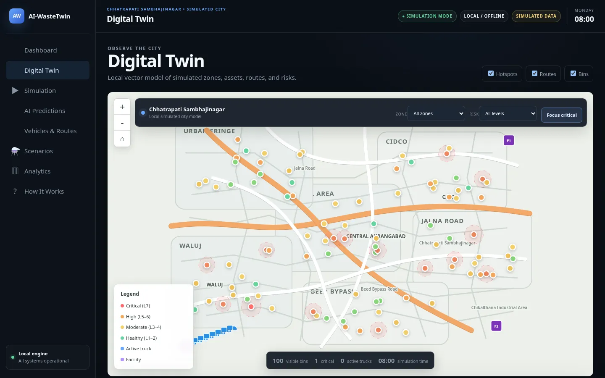
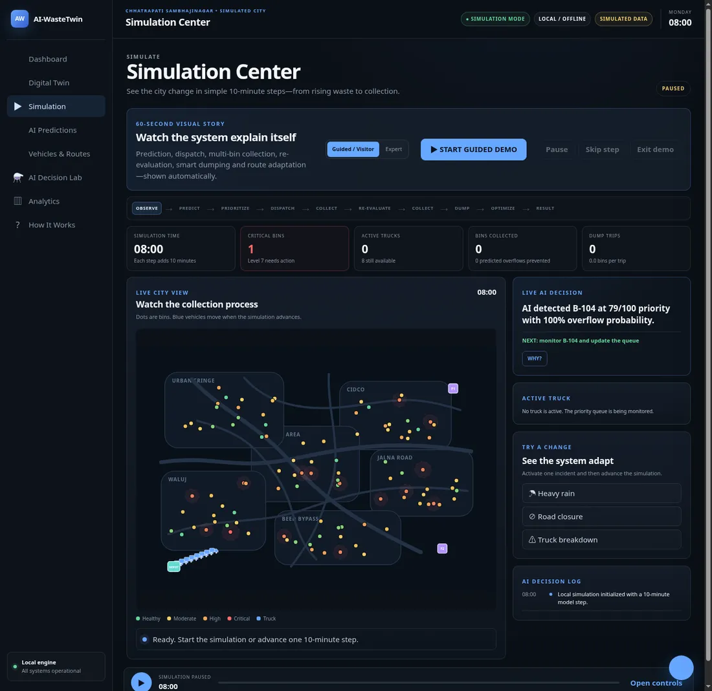

LIVE DIGITAL TWIN
City operating picture
HealthyModerateHighCriticalVehicle


URBAN DIGITAL TWIN • CHHATRAPATI SAMBHAJINAGAR
AI-powered urban waste management simulation that predicts risk, assigns vehicles, adapts routes, and explains every decision—entirely on your local machine.
CHHATRAPATI SAMBHAJINAGAR • SIMULATED CITY
OBSERVE
The simulated city is stable. Monitoring waste generation across all zones.
OBSERVE THE CITY
Local vector model of simulated zones, assets, routes, and risks.
SIMULATE
See the city change in simple 10-minute steps—from rising waste to collection.
Prediction, dispatch, multi-bin collection, re-evaluation, smart dumping and route adaptation—shown automatically.
Commercial intensity influences waste growth and zone priority. These are transparent simulation assumptions—not live municipal classifications.
Dots are bins. Gold vehicles move when the simulation advances.
PREDICT & PRIORITIZE
Local formulas forecast risk and show exactly why a bin is prioritized.
ASSIGN & OPTIMIZE
Capacity-aware assignment and adaptive local route simulation.
| Vehicle | Status | Load | Assigned bin | ETA |
|---|
PLAN WITHOUT CHANGING THE LIVE TWIN
Run deterministic what-if plans on a copy of the current city state.
Decision Lab calculations never modify the current simulation.
ANALYZE
Every result below comes from this session's local simulation history.
SYSTEM EXPLANATION
A simple explanation of what enters, what happens, and what comes out.
See how bins fill, predictions change, a truck is assigned, incidents alter the route, and collection updates analytics.
Every map marker, metric, route, alert, prediction, and chart reads from the same local simulation state. Nothing claims to be a live municipal measurement.